🐳 Docker Engine⚡ Laravel 11 / PHP 8.4☁️ Render PaaS Live 200 OK Activo
Despliegue de Laravel con Docker y Publicación Cloud en Render
Procedimiento de ingeniería para contenerizar un entorno limpio de desarrollo local con Docker Compose, gestionar el ciclo de control de versiones con Git/GitHub, resolver incidencias de contexto de compilación y desplegar el servicio web en alta disponibilidad en la nube de Render.
Reproducción Disponible en la Nube de Alta Velocidad
Para evitar almacenar archivos de video de gran tamaño dentro del repositorio Git, la evidencia se transmite directamente en streaming con soporte multi-dispositivo:
El proyecto Hola-Laravel implementa una infraestructura desacoplada y moderna que garantiza paridad total entre el entorno de desarrollo y el de producción mediante contenedores inmutables:
💻
Equipo Local
Desarrollo aislado
➔
🐳
Docker Compose
php:8.4-cli en /app
➔
⚡
Laravel 11
Motor MVC & Artisan
➔
🐙
Git / GitHub
Control de versiones
➔
☁️
Render Cloud
PaaS Build Context
➔
🌍
Internet
Servicio 200 OK
📁 Estructura del Repositorio (`jorgerickdev/hola-laravel`)Contexto Desacoplado
Hola-Laravel/
├── README.md # Documentación general del repositorio
├── docker-compose.yml # Orquestador del servicio para entorno local
└── src/ # Build Context: Código fuente y configuración de producción
├── Dockerfile # Definición de imagen para Render con extensión zip
├── .dockerignore # Exclusión de archivos voluminosos (.git, vendor, .env)
├── app/ # Controladores y lógica de la aplicación
├── bootstrap/ # Inicialización del framework
├── config/ # Configuraciones del sistema
├── database/ # Migraciones y base de datos local (database.sqlite)
├── public/ # Punto de entrada HTTP público (index.php)
├── resources/ # Vistas Blade y recursos estáticos
├── routes/ # Definición de rutas web (routes/web.php)
├── storage/ # Sesiones, logs y caché del framework
├── artisan # Interfaz de línea de comandos de Laravel
├── composer.json # Árbol de dependencias del proyecto PHP
└── composer.lock # Bloqueo de versiones deterministas
Procedimiento Técnico de Implementación
Bitácora Detallada
1
Fase 1: Infraestructura Local con Docker y Docker Compose
Aislamiento de Entorno · PHP 8.4 & Composer 2.10
Para evitar discrepancias entre versiones locales de PHP en el sistema anfitrión, se implementó un orquestador docker-compose.yml basado en la imagen oficial php:8.4-cli. Este archivo monta el directorio de trabajo local ./src en /app dentro del contenedor y mapea el puerto 8000:8000.
Al iniciar el contenedor con docker compose up -d y acceder con docker exec -it hola-laravel bash, se validaron las versiones de las herramientas fundamentales: Composer version 2.10.03 y PHP 8.4.27 (cli).
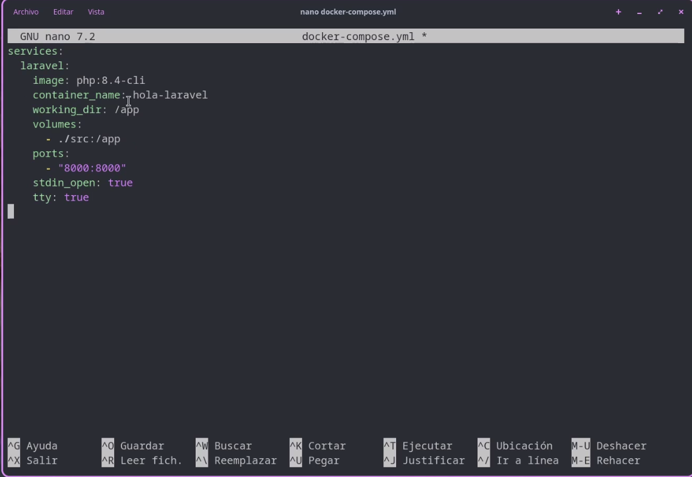
IMG01: Definición del servicio laravel en docker-compose.yml
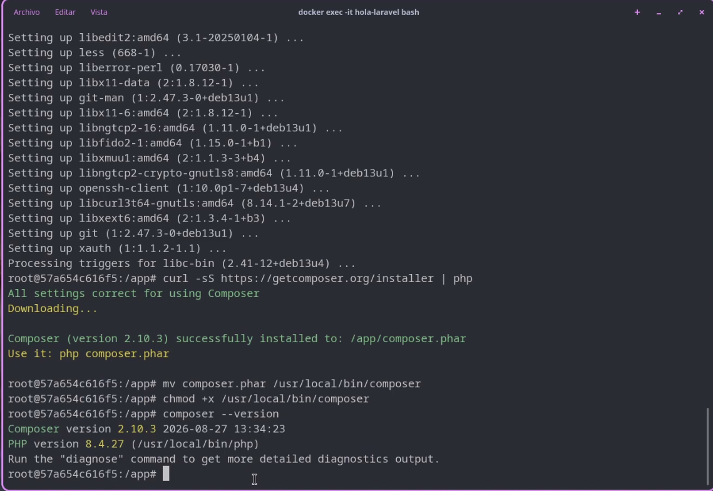
IMG02: Verificación de binarios: Composer 2.10.03 y PHP 8.4.27 en terminal
2
Fase 2: Docker para Producción y Reglas de Exclusión
src/Dockerfile & src/.dockerignore
Para el despliegue en la nube mediante Render, se elaboró un Dockerfile específico dentro de src/ que compila la extensión requerida libzip-dev, instala Composer mediante una estrategia multi-stage y optimiza las dependencias con composer install --no-dev --optimize-autoloader. Paralelamente, se redactó .dockerignore para evitar subir carpetas temporales y vendor al contexto de construcción.
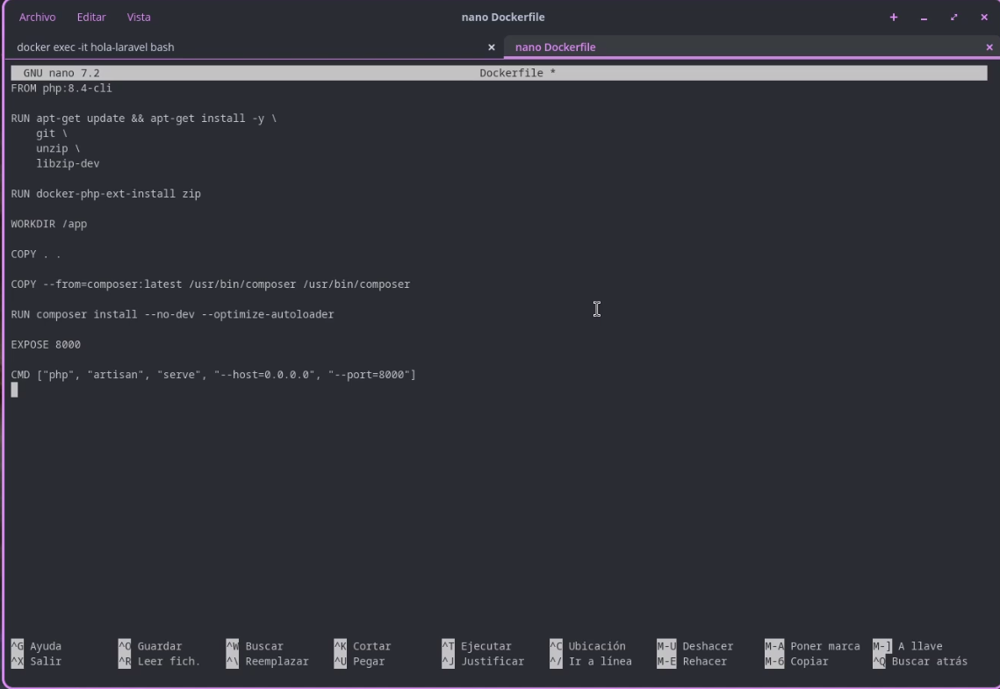
IMG03: Especificación del Dockerfile con PHP 8.4-cli y multi-stage Composer
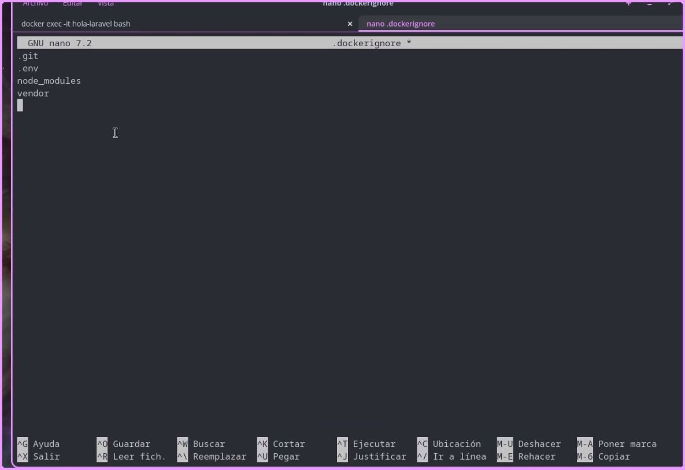
IMG04: Configuración de exclusiones (.git, .env, vendor) en .dockerignore
3
Fase 3: Puesta en Marcha y Verificación Local
Artisan Serve · http://localhost:8000
Antes de transferir la solución a la nube, se arrancó el servidor embebido de Laravel dentro del contenedor enlazando la interfaz de red global:
php artisan serve --host=0.0.0.0 --port=8000
La aplicación respondió satisfactoriamente en el puerto mapeado de la máquina anfitriona (http://127.0.0.1:8000), corroborando el procesamiento del pipeline MVC.
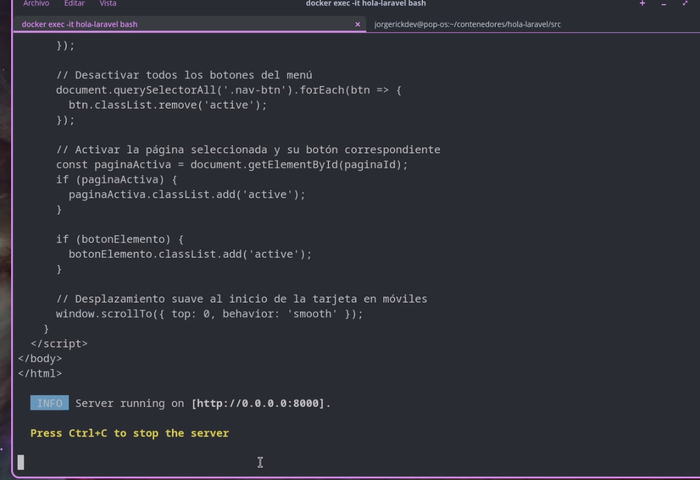
IMG05: Ejecución del comando php artisan serve --host=0.0.0.0 --port=8000
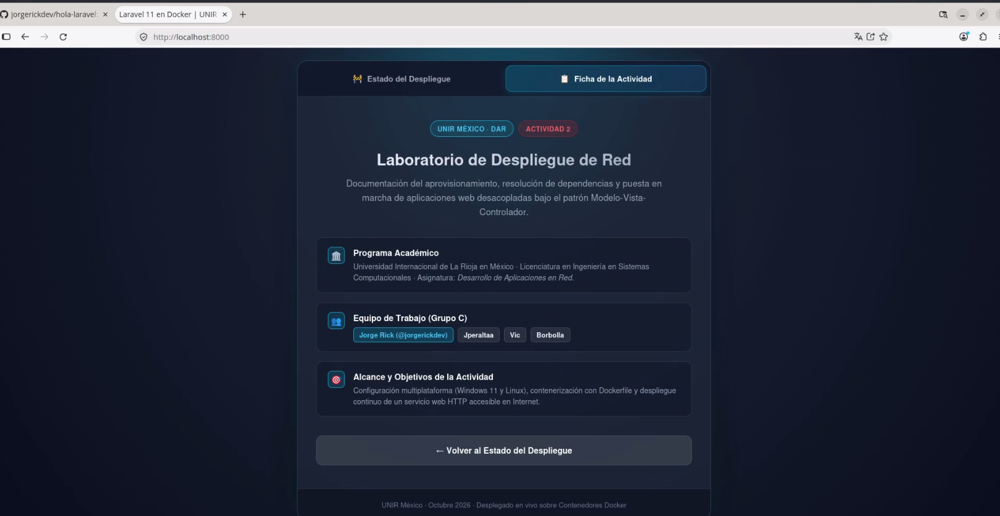
IMG06: Verificación de la aplicación web activa en localhost:8000
4
Fase 4: Control de Versiones con Git y GitHub
Auditoría de Archivos, SQLite Forzada y Push Remoto
Se inicializó el repositorio con git init. Durante la inspección con git status, se detectó que el archivo de base de datos SQLite no estaba siendo rastreado. Para resolverlo, se forzó su inclusión:
# Verificación de seguimiento de base de datos
git ls-files | grep sqlite
# Inclusión forzada requerida para ejecución en la nube
git add -f src/database/database.sqlite
# Commit y push remoto
git commit -m "Proyecto completo Hola-Laravel"
git branch -M main
git remote add origin git@github.com:jorgerickdev/hola-laravel.git
git push -u origin main
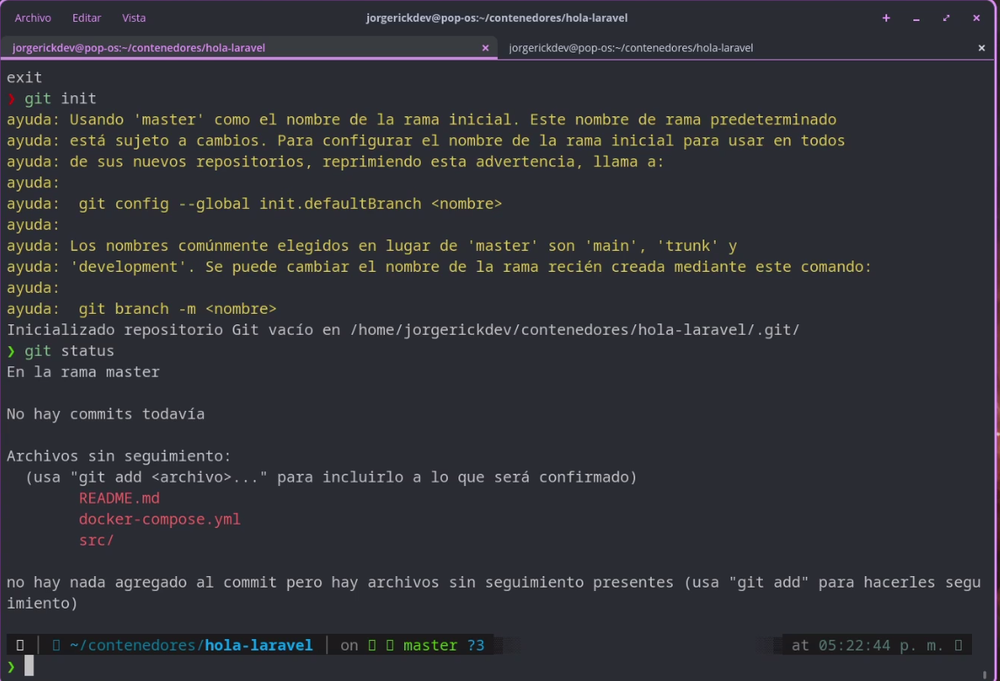
IMG07: Inspección del árbol de trabajo con git status antes del commit
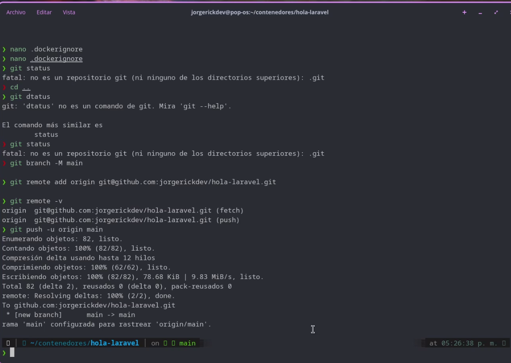
IMG08: Sincronización exitosa con la rama remota main en GitHub
5
Fase 5: Aprovisionamiento del Web Service en Render
PaaS Cloud · Docker Runtime & Variables de Entorno
En la plataforma de Render, se seleccionó New > Web Service conectando directamente el repositorio público jorgerickdev/hola-laravel. Se seleccionó el runtime Docker y se inyectaron las variables indispensables de producción extraídas del archivo .env local:
APP_KEY: Clave criptográfica para firmas HMAC y cifrado de sesiones.
APP_DEBUG: Configurado para control de excepciones en runtime.
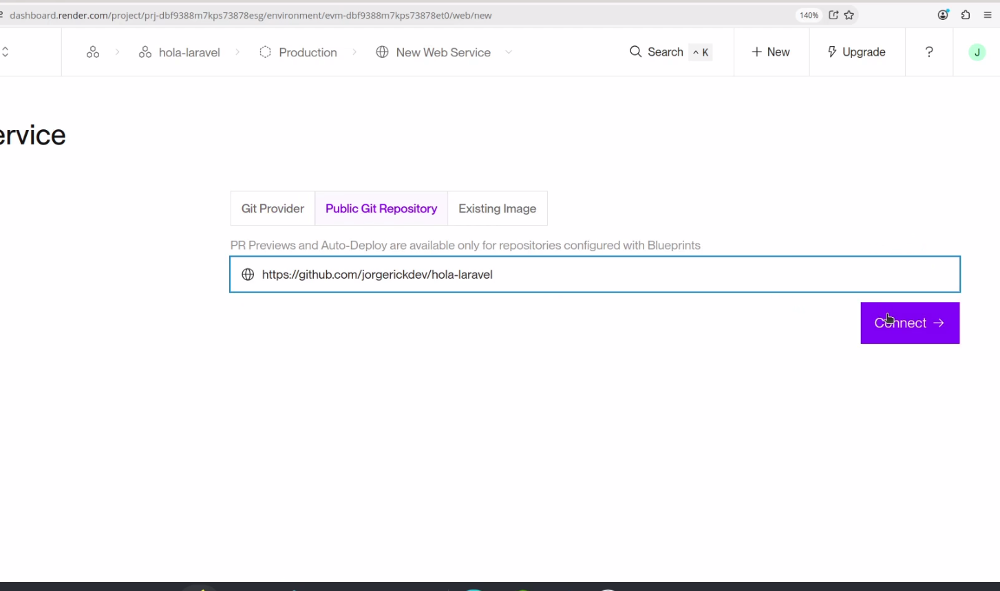
IMG09: Configuración inicial del servicio web en el panel de Render
6
Fase 6: Bitácora de Incidencias Técnicas y Diagnóstico DevOps
Resolución de Fallas Críticas de Compilación
Durante los primeros despliegues automáticos, el motor de construcción de Render arrojó errores que interrumpieron la publicación ("puras fallas"):
❌ Incidencia A: Dockerfile no localizado
Error en log:failed to read dockerfile: open Dockerfile: no such file or directory
Causa: Por defecto, Render busca ./Dockerfile en la raíz del repositorio, pero el archivo se diseñó dentro de la subcarpeta src/Dockerfile.
❌ Incidencia B: Composer no encontraba dependencias
Error en log:Composer could not find a composer.json file in /app
Causa: El contexto de construcción (*Docker Build Context*) estaba fijado en la raíz ., por lo que el comando COPY . . no posicionaba los archivos de Laravel en el directorio raíz de la imagen.
✅ Solución Técnica Aplicada en Render
En la sección Settings > Build & Deploy de Render, se ajustaron con precisión los parámetros de compilación:
Dockerfile Path:src/Dockerfile
Docker Build Context Directory:src
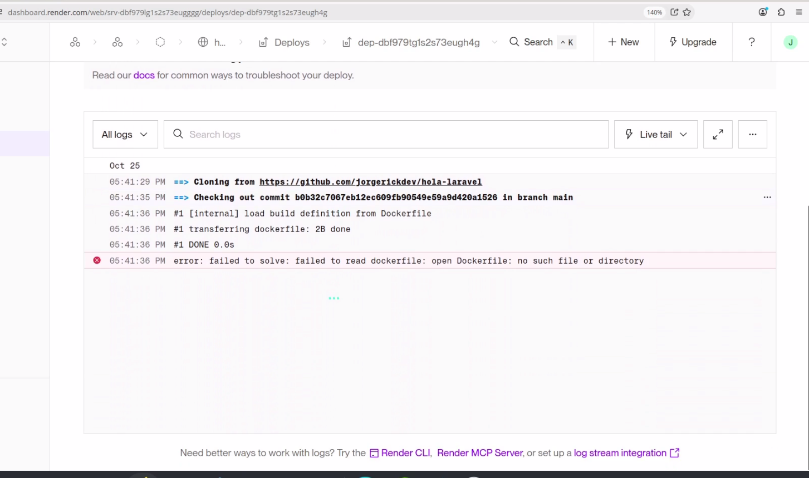
IMG10: Logs de error en Render por discrepancia de ruta y contexto
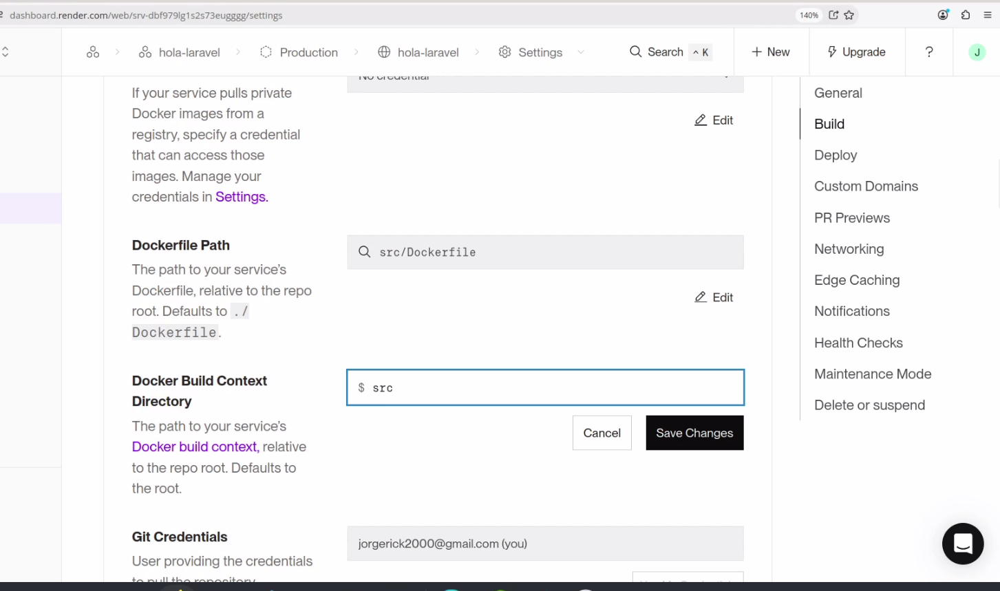
IMG11: Configuración corregida: Dockerfile Path en src/ y Build Context en src
7
Fase 7: Verificación de Salud en Producción y Disponibilidad
Certificación 200 OK · https://hola-laravel.onrender.com
Tras corregir el contexto de compilación, Render construyó la imagen Docker en 45 segundos, asignó el certificado SSL/TLS automático y desplegó el contenedor en su red global. Los logs confirmaron el estado operativo: "Your service is live 🎉".
Se accedió desde Mozilla Firefox a la URL pública, comprobando que la aplicación procesa las solicitudes HTTP en la nube con normalidad:
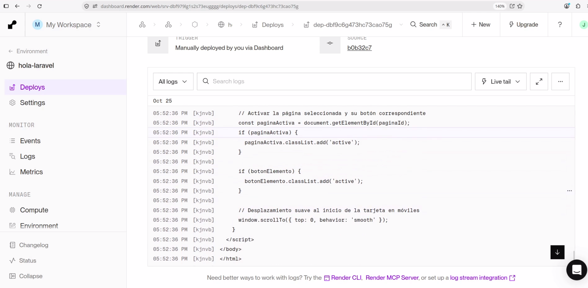
IMG12: Logs de Render confirmando el despliegue exitoso (Service is live)IMG13: Acceso público confirmado en https://hola-laravel.onrender.com en Firefox
Matriz de Cumplimiento Técnico y Evaluación DevOps
100% Validado
Criterio Técnico
Entorno / Parámetro
Evidencia / Verificación
Estado
Contenedorización Base
Docker Compose (php:8.4-cli)
Mapeo de volúmenes ./src:/app y puerto 8000
Completado
Gestor de Dependencias
Composer 2.10.03
Árbol de dependencias resuelto sin ensuciar el host
Completado
Control de Versiones
Git & GitHub
Inclusión forzada de database.sqlite con git add -f
Completado
Dockerfile Multi-Stage
Producción (Render)
Extensiones libzip y optimización --no-dev
Completado
Build Context Optimization
Render PaaS
Rutas corregidas a src/Dockerfile y src
Completado
Disponibilidad Pública
Render Web Service
URL con HTTPS activo: https://hola-laravel.onrender.com
Completado
Evidencia Audiovisual
OneDrive / Google Drive
Video tutorial demostrativo grabado y disponible en la nube